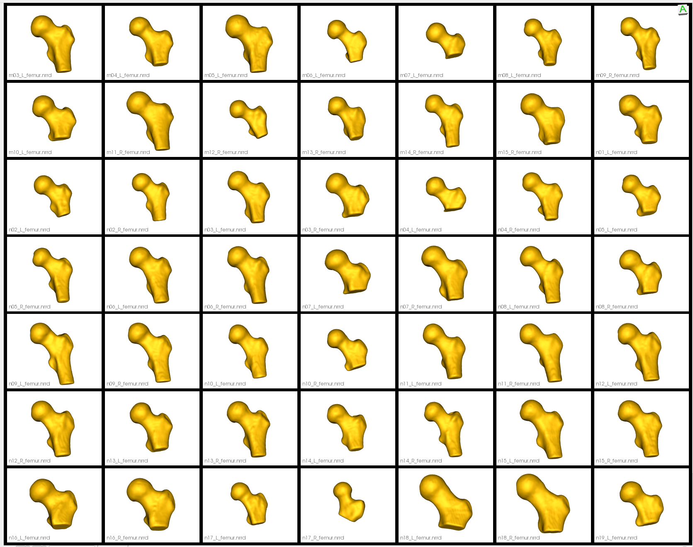

Femur with Cutting Planes
What is the Use Case?
The femur_cut use case demonstrates an alternative approach to the femur use case by using cutting planes to constrain the particle distribution on the femur surface. The data and workflow of this use case are identical to the femur use case with one exception: the shapes are not clipped using cutting planes in grooming, but rather the cutting planes are fed as an optimization parameter. This prevents particles from moving beyond the cutting plane during optimization, preventing the false bottom created by clipping from being captured in the shape model as it is in the femur use case.
Important
Minimum of 32GB of RAM required to run the full use case.
Grooming Steps
The grooming steps are the same as the femur use case, except clipping is not performed. Please refer back to the femur grooming steps for a full explanation of grooming.
Note because the clipping step is skipped, the groomed femurs vary in shaft length: 
Relevant Arguments
--groom_images --use_subsample --num_subsample --skip_grooming --use_single_scale --mesh_mode --tiny_test
Optimization Parameters
The python code for the use case calls the optimize command of ShapeWorks, which requires that the optimization parameters are specified in a python dictionary. Please refer to Parameter Dictionary in Python for more details.
Below are the default optimization parameters for this use case.
"number_of_particles" : 1024,
"use_normals": 0,
"normal_weight": 10.0,
"checkpointing_interval" : 200,
"keep_checkpoints" : 1,
"iterations_per_split" : 4000,
"optimization_iterations" : 4000,
"starting_regularization" : 100,
"ending_regularization" : 0.1,
"recompute_regularization_interval" : 2,
"domains_per_shape" : 1,
"domain_type" : 'image',
"relative_weighting" : 10,
"initial_relative_weighting" : 1,
"procrustes_interval" : 1,
"procrustes_scaling" : 1,
"save_init_splits" : 1,
"debug_projection" : 0,
"verbosity" : 0,
"use_statistics_in_init" : 0,
"adaptivity_mode": 0,
"cutting_plane_counts": cutting_plane_counts,
"cutting_planes": cutting_planes,
"use_shape_statistics_after" = 64
Here cutting_plane_counts is one for every femur and the cutting_planes is the same cutting plane points for every femur.
Analyzing Shape Model
Below we can see the mean shape, individual samples, and modes of shape variations of the optimized shape mode using single-scale optimization. Here we can see the particles are constrained to be above the cutting plane.